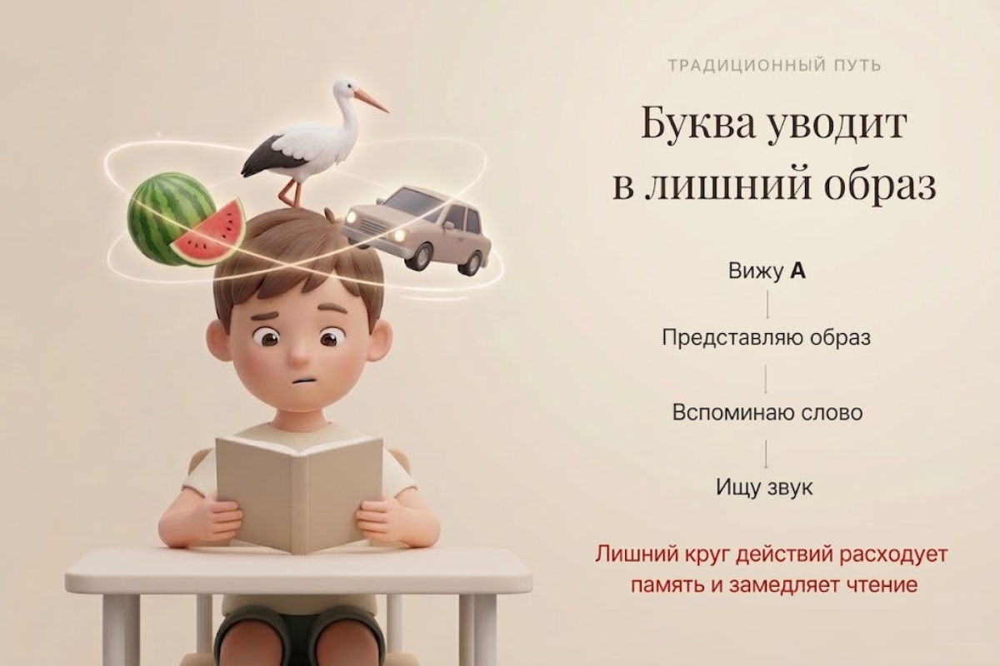
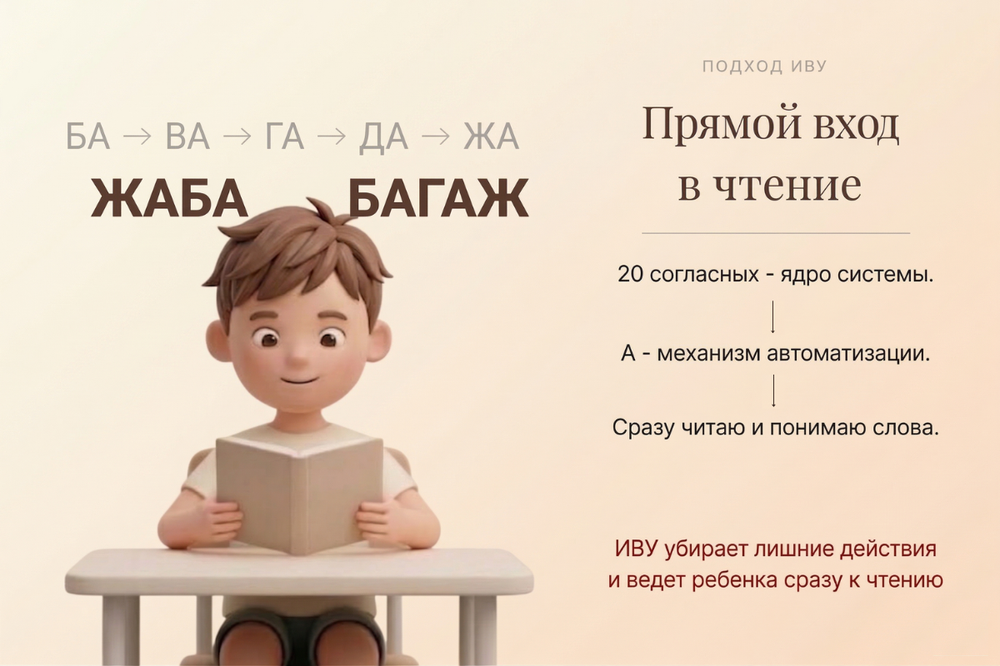

Авторская система Сергея Белолипецкого
Дети 3–11 лет • чтение • память • мышление
ИВУ — система чтения, памяти и мышления Для детей 3–11 лет. От первых слов — к уверенному чтению перед школой.
Алфавит — не просто набор букв.
20 согласных образуют структурное ядро.
10 гласных запускают механизм чтения.
На этой логике построен метод ИВУ.
ИВУ помогает ребёнку спокойно войти в чтение, память и мышление как в единую систему — без перегруза и без зубрёжки.
Контрольная точка перед школой: к 6–7 годам ребёнок читает текст объёмом 100 слов за 3 минуты.
Чтение без перегруза
Память без торможения
Обучение без натаскивания
Чтение — механизм развития мозга.
Это подтверждают исследования Бориса Никитина¹ и Дэвида Векслера².
Система в цифрах
За ИВУ стоит не разовая идея, а большой путь: практика, книги, патент и выстроенная система обучения.
40 лет
педагогических исследований
1999
патент на обучающие кубики
ЭКСМО
книги и издательская база
ММНГ
модель формирования грамотности
Почему чтение стало проблемой
Потери начинаются рано: ребёнок читает медленно, быстро устаёт и не удерживает смысл текста — это накапливается к школе.
Большинство детей не слабые. Им просто не хватает объёма памяти для чтения и понимания.
Читает, но не понимает
Ребёнок может озвучивать слова, но не удерживать смысл из-за нехватки объёма памяти.
Школа перегружает
Программа требует не только знания букв, но и памяти, анализа и устойчивого внимания.
Теряется интерес
Когда чтение даётся тяжело, книга перестаёт быть радостью и становится нагрузкой.
Читает увереннее
Ребёнок перестаёт застревать на каждом слове.
Понимает смысл
Текст воспринимается целостно, а не по отдельным словам.
Меньше устаёт
Чтение становится спокойным и естественным процессом.
Легче учится
Память и мышление начинают работать вместе.
Что получает ребёнок
ИВУ развивает не только чтение, а основу для памяти, речи и уверенного обучения.
Ребёнок начинает читать спокойнее, понимать текст целостно, меньше уставать и легче входить в учебную нагрузку.
Масштаб методической системы
Это не набор отдельных материалов, а целостная система, где уроки, диктанты и задания выстроены в единый ритм обучения.
270
мульт-уроков и сценариев
400 × 3
диктанты
устные задания
письменные упражнения
30
виртуальных наставников
36
учебных недель
100
шагов игровой системы
Что такое Метод объёма
Метод объёма — это не «больше информации», а способ, при котором ребёнок удерживает смысл целиком, а не по частям.
- идёт по шагам и обрывает связь
- дробит внимание
- стирает предыдущий смысл
- перегружает переключениями
- связывает несколько процессов сразу
- создаёт устойчивые связи
- расширяет объём памяти
- ускоряет понимание
Почему «А — арбуз» тормозит чтение

Код языка в руках ребёнка
Набор обучающих кубиков Сергея Белолипецкого — не игрушка, а инструмент памяти
Крутящийся кубик соединяет движение, знак и удержание структуры. Так чтение становится не случайным навыком, а устойчивой опорой для памяти и понимания.
- Движение включает память
- Структура помогает удерживать смысл
- Повтор переводит чтение в автоматизм
Кубик помогает ребёнку не просто видеть буквы, а удерживать их как работающую систему.
Куб в руках ребёнка становится инструментом памяти
MODEL: IVU-01
01
Моторика
Запуск через действие
02
Код языка
Структура слога
03
Автоматизация
Замыкание навыка
04
Интеллект
Стабильная система
Ноу-хау ИВУ
НОУ-ХАУ Азбука и НОУ-ХАУ Букварь — единая система обучения
В ИВУ Азбука и Букварь — это не два разрозненных пособия, а связанная система, построенная на одном материале.
Они используются параллельно: Букварь даёт более сложный уровень, а Азбука помогает пройти этот же материал легче и закрепить результат.
Такой подход позволяет ребёнку не перегружаться и уверенно продвигаться вперёд.
Ещё ни одному автору не удавалось создать одновременно и азбуку, и букварь как единую систему. Именно это позволяет детям осваивать чтение на 1–2 года раньше общепринятых сроков.
Как ребёнок входит в систему ИВУ
Путь строится по возрасту: от первых слов на плоскости — к объёмному чтению и контрольному тексту 100 слов за 3 минуты.
3–4 года
Первые 100 слов
Ребёнок собирает первые слова из разрезных слогов и начинает читать на плоскости — спокойно, без перегруза и спешки.
4–5 лет
Чтение на цветных кубиках
Плоское чтение переходит в объёмное: ребёнок начинает удерживать структуру слова и читать через движение, цвет и форму.
6–7 лет
Контрольный текст «Правда важна»
К этому возрасту ребёнок выходит на контрольную точку: текст объёмом 100 слов за 3 минуты.
Кому подходит ИВУ и как подключиться
ИВУ работает по-разному для каждой аудитории. Выберите свой формат участия и перейдите к подробному маршруту.
Родителям
Домашний формат
Подходит семьям, которые хотят спокойно ввести ребёнка в чтение,
понять логику метода и получить маршрут занятий без перегрузки.
Педагогам
Сценарии и внедрение
Формат для педагогов, которым нужны готовые сценарии,
методическая логика и понятный способ встроить ИВУ в практику.
Детским садам
Групповой формат
Для детских садов и организаций, которые хотят внедрять ИВУ
как систему раннего чтения и подготовки к школе.
Партнёрам и организациям
Подключение и сотрудничество
Если вы представляете школу, проект, фонд или другую образовательную
структуру, мы подберём отдельный формат взаимодействия.
Как начать путь в ИВУ
Не нужно разбираться во всей системе сразу — мы поможем вам начать спокойно и правильно.
01
Оставьте заявку
Расскажите о ребёнке или группе.
02
Получите маршрут
Мы подберём оптимальный путь и формат занятий.
03
Начните занятия
Дома, в детском саду или с педагогом — в удобном для вас формате.
Как работает доступ в ИВУ
В системе ИВУ разные уровни участия: часть материалов открыта, часть доступна по профессиональному сопровождению.
Бесплатно
Детям
Клуб Кручучу, задания, гимн, интерактив и первые шаги в системе — открыты свободно и работают как игровой вход.
Бесплатно
Детским садам
Базовая архитектура метода передаётся без оплаты — чтобы запускать систему чтения на уровне страны.
Профессиональный доступ
Педагогам и родителям
Методкабинет, поурочные разработки, диктанты, сопровождение и консультации — доступны в платном формате.
Поддержка
Фонд ИВУ
Проект можно поддержать добровольно — это помогает распространять метод по стране.
Доступ к материалам открывается через «умную заявку» —
мы подбираем формат участия под вашу задачу.
ИВУ — это не просто обучение чтению
Это система, которая развивает память, речь, письмо и мышление. Чтение здесь — не цель само по себе, а основа для уверенного обучения в школе.
Официальный знак качества ИВУ
Стремление → Результат
BabyStudent — это знак того, что ребёнок уверенно читает, понимает текст и справляется с заданиями без перегрузки.
В «Деканате детям» ребят встречает герой Кручучу. Каждый месяц мы подводим итоги и отмечаем достижения участников.
Что важно знать перед началом
Метод ИВУ совместим со школьной программой?
Да. ИВУ не конфликтует со школьной программой, а помогает ребёнку легче войти в чтение, понимание текста и дальнейшее обучение.
Сколько времени нужно в день?
Обычно достаточно 5–10 минут регулярных занятий. Главное в ИВУ — не длительность, а правильная система и спокойный ритм.
Нужны ли специальные покупные материалы для старта?
Нет. Многие стартовые материалы можно сделать самостоятельно дома. Это позволяет семье начать занятия спокойно и без лишних затрат.
Мы вернём России статус
самой читающей страны в мире.
самой читающей страны в мире.